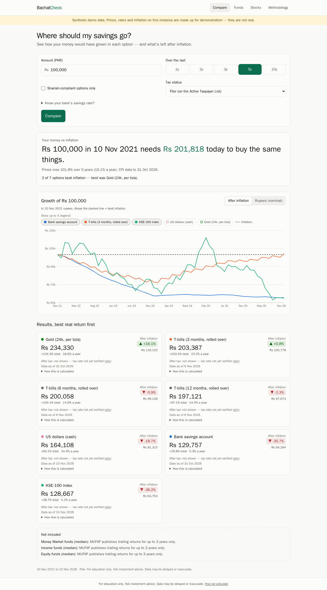
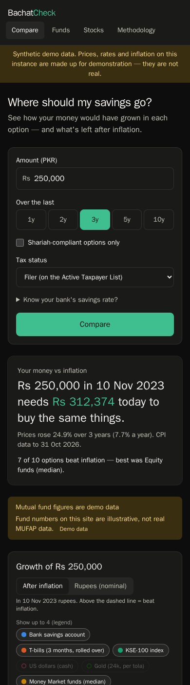
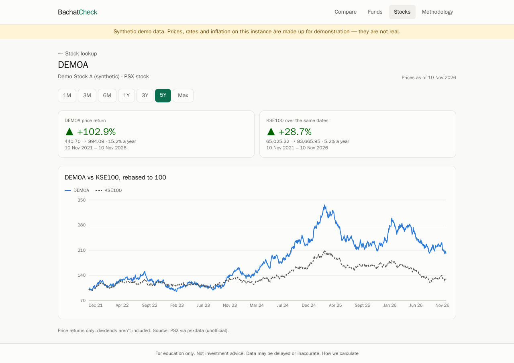

| Live site | https://bachatcheck-akteam321.vercel.app |
| Public API | https://bachatcheck-api-akteam321.vercel.app (docs at /docs) |
| Source code | https://github.com/Abdullah-Akmal/BachatCheck |
| Author | Abdullah Akmal |
| Date | November 2026 |
For education only. Not investment advice. Data may be delayed or inaccurate.
BachatCheck answers one question a Pakistani saver actually has: "If I had put my money here, would it have beaten inflation?"
You enter an amount and a time horizon (1–10 years). BachatCheck shows how that money would have grown in a bank savings account, Treasury bills, mutual funds, the KSE-100 stock index, US dollars and gold, and then shows what is left after inflation (and, once tax rates are verified, after tax). The headline turns this into plain language: "Rs 100,000 in Nov 2023 needs Rs 125,086 today to buy the same things."
Behind the page is a production-style system:
In the years this app covers, Pakistani savers faced double-digit inflation, a policy rate that swung between 5.75% and 22%, and a rupee that lost over 60% of its value against the dollar in ten years. In that environment, the numbers people usually compare mislead them:
An ordinary saver on a phone: someone deciding between leaving money in the bank, buying T-bills, putting it in a mutual fund, buying shares, or keeping dollars or gold. Most users will be on mobile, so the UI is designed mobile-first.
The real return is the return after inflation. BachatCheck computes it exactly (Fisher equation), shows whether each option beat inflation, and turns it into rupees: "you would need Rs X today to buy what Rs Y bought then."
The URL holds every input, so results can be shared as a link. Every page shows the date its data is as of.



Screenshots were taken on the synthetic demo dataset used for local development (the yellow banner says so), so no licensed market data appears in published images.
Every source was researched before any code was written against it: the API format, authentication, rate limits, update cadence and terms of use.
| Data | Source | How it is accessed | Licensing / notes |
|---|---|---|---|
| CPI inflation, policy rate, T-bill yields, KIBOR, deposit rates | SBP EasyData API (State Bank of Pakistan) | REST API: /api/v1/series/{key}/data with an API key as a query parameter. JSON rows. Series keys found through the
dataset-metadata API and verified one by one. |
Free key that expires every 90 days; 2,000 calls/day, 250/hour. Public reuse allowed with attribution. |
| USD/PKR exchange rate | Frankfurter v2, SBP provider | /v2/rates?base=USD"es=PKR&providers=SBP. No key. SBP's daily average interbank rate. |
Published monthly, so the latest weeks lag. v1 of the API no longer exists (returns 404). |
| KSE-100, KMI-30, PSX stocks | psxdata (MIT-licensed Python library) | Daily OHLCV (open, high, low, close, volume). The library returns floats, so they are converted to Decimal at the boundary. | PSX's terms restrict automated retrieval and public display. The owner chose to use it, kept polite (one run a day, short watchlist), with a switch to turn it off. |
| Mutual funds (NAV + trailing returns) | MUFAP Performance Summary | Excel export, downloaded by hand and parsed locally. | Terms allow personal, non-commercial use only, and the site blocks bots. The public site shows demo funds instead. |
| Gold (PKR per tola, 24k) | Hand-maintained CSV | Versioned in the repo. | No reliable free source found; labelled "manually updated". |
| Tax rates | Versioned YAML | Asset class, tax type, filer status, rate, effective dates, source URL, verified flag. |
Placeholders until verified against current FBR rules. Never guessed. |
| Our code | SBP series key | What it is | Coverage |
|---|---|---|---|
CPI_MOM | TS_GP_PT_CPI_M.P00461516 | National CPI, month-on-month % (chained into a price index) | Jul 2016 → |
CPI_YOY | TS_GP_PT_CPI_M.P00011516 | National CPI, year-on-year % | Jul 2016 → |
POLICY_RATE | TS_GP_IR_SIRPR_AH.SBPOL0030 | SBP policy (target) rate, recorded on change dates | 2015 → |
TBILL_3M/6M/12M | TS_GP_BAM_SIRTBIL_AH.TB0010/20/30 | T-bill auction cut-off yields | 2015 → |
KIBOR_3M/6M | TS_GP_BAM_SIRKIBOR_D.KIBOR0020/30 | Karachi Interbank Offer Rate | 2015 → |
DEPOSIT_RATE_* | TS_GP_BAM_SIRWALDR_M.WALD0030/40 | Weighted-average deposit rate (fresh / outstanding) | 2015 → |
Today the live database holds about 7,200 SBP observations, 2,500 daily USD/PKR rates and roughly 30,000 PSX price bars.
available: false
with a reason and never fills the gap. If a stock's history is shorter than the chosen period, the response carries a
partial flag. If a tax rule isn't verified, no after-tax number is shown.| Component | Responsibility | Runs on |
|---|---|---|
| ingestion/ | One Provider per source: fetch() returns raw payloads and parse() returns typed records.
A runner stores raw bytes, validates, upserts and records a job_runs row. CLI: python -m ingestion run|backfill|seed|list. | GitHub Actions (daily cron), or locally in Docker |
| backend/ | SQLAlchemy models and Alembic migrations (shared with ingestion), the returns engine,
the FastAPI app (/api/v1), middleware for cache and rate limit. | Vercel Python function (Singapore) |
| frontend/ | Next.js App Router pages. Server components fetch the API; only the form and charts run in the browser. | Vercel (Singapore) |
| Database | PostgreSQL 18: instruments, prices, fund snapshots, macro series, FX, raw snapshots, job runs, tax rules. | Neon serverless Postgres (Singapore) |
backend/ FastAPI app (bachatcheck/): models, alembic/, returns/, api/v1/, middleware + tests/ ingestion/ providers/ (sbp, frankfurter, psx, mufap, gold, tax_rules, demo_seed), runner, writers, cli + tests/ frontend/ Next.js App Router (src/app), components, lib (api client, formatting), Vitest tests data/ tax_rules.yaml, gold CSV, MUFAP inbox (git-ignored) infra/ Docker image for the API (alternative host) .github/ ci.yml (lint, types, tests, build) · ingest.yml (scheduled ingestion) docker-compose.yml · DEPLOY.md · README.md
Every source goes through the same five steps:
raw_snapshots before parsing, with secrets stripped from the URL.repr().INSERT … ON CONFLICT DO UPDATE on unique keys, in 1,000-row chunks. Then a job_runs row./freshness, and the Methodology page shows it to users.| When (PKT) | Sources | Why then |
|---|---|---|
| 22:30 daily | tax rules, gold, Frankfurter, SBP | After the evening data releases |
| 16:00 weekdays | PSX | After the 15:30 market close |
| On demand | any source, with optional backfill date | History loads and testing |
The workflow applies database migrations before ingesting. Secrets come from a GitHub environment, and a guard step fails fast with a clear message if they are missing.
docker compose up starts Postgres, the API and the web app. ingestion seed then loads a deterministic,
synthetic dataset from 2016 to today, and the site shows a banner while it is loaded. The seed refuses to run on a database
that already holds real data, and --clear removes it.
| Table | Holds | Uniqueness (idempotency key) |
|---|---|---|
instruments | Stocks, indices, mutual funds and gold, with category, Shariah flag and return basis | (kind, symbol) |
price_bars | Daily OHLCV; gold has close only | (instrument, date, source) |
fund_snapshots | NAV + 11 trailing returns per fund per day | (instrument, as_of_date, source) |
macro_series / macro_observations | CPI, rates, yields | series code unique · (series, date, source) |
fx_rates | USD/PKR | (base, quote, date, provider) |
raw_snapshots | Exact source bytes + SHA-256 | indexed by source and fetch time |
job_runs | Status, row counts, redacted error per run | — |
tax_rules | Versioned tax assumptions | (asset class, tax type, filer status, effective_from) |
Money and rates are NUMERIC (never float). Constraint names are deterministic, so migrations are stable,
and CHECK constraints guard positive prices and valid statuses.
All money math lives in one pure-Python module (backend/bachatcheck/returns/). It uses Decimal at 34
significant digits and is unit-tested against hand-worked values.
| Measure | Formula | Notes |
|---|---|---|
| Total return | end ÷ start − 1 | |
| Per year (CAGR) | (1 + total)^(365 ÷ days) − 1 | Actual/365, as Pakistan's money market uses |
| Real return | (1 + nominal) ÷ (1 + inflation) − 1 | Exact Fisher equation. 12% nominal with 10% inflation = 1.82%, not 2% |
| Inflation | CPI index from chained month-on-month changes | Exact over any window, unlike averaging year-on-year rates |
| After tax | gain × (1 − rate); losses aren't refunded | Only from verified rules |
| Option | Model |
|---|---|
| Bank savings | Profit credited monthly at the rate in force, then reinvested. The rate is SBP's average deposit rate or the user's own. |
| T-bills (3/6/12 months) | Bought at the latest auction cut-off yield and rolled over at each maturity. Simple interest within a bill, compounding across bills. The last partial period accrues pro rata. Tax is withheld on each credit. |
| KSE-100 / KMI-30, USD, gold | Buy at the price on or before the start date, value at the latest price. Index levels exclude dividends. |
| Mutual funds | The median of the category's trailing 1/2/3-year return. Annualized categories compound (1+r)^years; absolute ones are used as is. |
| Shariah mode | Drops interest-bearing savings and T-bills, uses KMI-30 instead of KSE-100, and uses Shariah fund categories. |
Prices rose 25.09% (7.74% a year), so you would need Rs 125,086 today to buy what Rs 100,000 bought then.
| Option | Value today | Per year | Real return (total) |
|---|---|---|---|
| KSE-100 index | Rs 313,899 | 46.4% | +150.9% |
| T-bills, 6 months rolled | Rs 155,522 | 15.8% | +24.3% |
| T-bills, 3 months rolled | Rs 154,035 | 15.5% | +23.1% |
| T-bills, 12 months rolled | Rs 153,672 | 15.4% | +22.9% |
| Bank savings (SBP average rate) | Rs 123,184 | 7.2% | −1.5% |
| US dollars (cash) | Rs 96,357 | −1.2% | −23.0% |
Fund rows are omitted because the public site uses demo fund data. The savings figure uses SBP's average deposit rate, which includes zero-profit current accounts. It understates a real savings account, which is why users can enter their own rate.
Versioned under /api/v1, with OpenAPI docs at /docs. Decimals travel as strings
("125085.66"), money rounded to 2 decimal places, returns as fractions to 6 ("0.250857" = 25.09%).
Nothing is lost to floating point on the wire.
| Endpoint | Purpose |
|---|---|
GET /compare?amount&years&shariah&filer_status&savings_rate | Nominal, real and after-tax growth per option, chart series, inflation line, headline |
GET /funds, /funds/categories, /funds/{symbol} | Funds explorer: filter, search, sort, NAV history |
GET /stocks/search?q, /stocks/{symbol}?period | Price history and return vs KSE-100, with a partial-coverage flag |
GET /macro, /macro/{code} | Economic series and their coverage |
GET /freshness | Last successful run per source, latest data date per dataset |
GET /tax-rules, /config, /health | Tax assumptions, data modes, liveness and database status |
X-Cache: HIT/MISS, Cache-Control).X-Forwarded-For header (/health is exempt)."database":"unavailable" instead of a 500 error.FUNDS_DATA_MODE=demo and STOCKS_DATA_MODE=demo.Rs 1,250,000; numbers converted from decimal strings only at display time.| Layer | Choice | Why |
|---|---|---|
| Language | Python 3.11/3.12, TypeScript | Python for data and finance; TypeScript for a typed UI |
| API | FastAPI, Pydantic v2 | Typed request/response models, automatic OpenAPI, fast |
| ORM / migrations | SQLAlchemy 2, Alembic | Typed models, Postgres upserts, versioned schema |
| Database | PostgreSQL (Neon) | Exact NUMERIC, constraints, free serverless tier |
| Ingestion | httpx + tenacity, openpyxl, PyYAML, psxdata | Retries/backoff, Excel and YAML parsing, PSX access |
| Logging | structlog (JSON in production) | Structured, searchable logs; secrets redacted |
| Frontend | Next.js 15, React 19, Tailwind CSS 4, Recharts | Server rendering, fast styling, composable charts |
| Testing | pytest, Vitest + Testing Library | Unit, integration (real Postgres) and component tests |
| Quality | ruff, mypy (strict), ESLint, tsc, actionlint | Lint and static types on every push |
| CI/CD | GitHub Actions; Vercel Git integration | Tests on every push; auto-deploy on main |
| Local dev | Docker Compose | One command for Postgres + API + web |
| Hosting | Vercel (×2), Neon, GitHub Actions | All free, no card, same region |
Python: ruff (lint and format), mypy in strict mode, Alembic migrations applied to a real Postgres, then pytest.
Frontend: ESLint, TypeScript, Vitest and a production next build. Workflows are linted with actionlint.
.env is ignored; production secrets live in Vercel and GitHub environment secrets.| What | Where / how |
|---|---|
| Frontend | Vercel project bachatcheck (root frontend/), Singapore, production public, previews protected |
| API | Vercel project bachatcheck-api (root backend/, FastAPI on Python 3.12), Singapore |
| Database | Neon Postgres (pooled connection for the API, direct connection for migrations) |
| Data refresh | GitHub Actions ingest.yml, which reads secrets from the BachatCheck environment |
| Releases | Push to main → CI → both Vercel projects redeploy automatically |
/api/v1/health and /api/v1/freshness, or the Methodology page.raw_snapshots if the Neon free tier (1 GB) gets close.These are the stories worth telling in an interview. Each one is a real problem that came up while building and deploying the project.
| Challenge | What happened and what was done |
|---|---|
| MUFAP data licensing | The fund association's site blocks bots, and its terms allow personal use only. Instead of scraping around the block: a manual Excel import for local use, and clearly labelled demo funds on the public site, behind a config switch. |
| PSX terms of use | Found that PSX restricts automated retrieval and public display. Raised it with the owner with alternatives. The owner chose to proceed, so it is documented, kept polite, and has a one-flag kill switch. |
| A dead SBP dataset | The detailed deposit-rate dataset had returned only blank "Missing value" rows since 2024. The parser skipped them correctly; switched to the overall series that still updates, and documented its bias. |
| Frankfurter v1 disappeared | The v1 endpoints returned 404. Moved to v2 and its SBP provider. |
| Postgres parameter limit | A seed payload exceeded 65,535 bind parameters in a single INSERT. Upserts are now chunked at 1,000 rows, with a regression test. |
| Stuck job records | A Docker restart killed a job mid-run, leaving it "running" forever. Runs stuck for over 2 hours are now auto-closed as failed. |
| Windows Smart App Control | It blocked compiled Python wheels on the development machine. All Python ran in Docker, which matches production anyway. |
| Hosting needed a card | Render's Blueprint flow required a card. Re-platformed the API to Vercel's native FastAPI support: an entrypoint, demo data shipped as package data, migrations moved to CI. It was verified in a Vercel-like clean container first. |
| Blocked on a CVE | Vercel refused to deploy Next.js 15.5.4 (CVE-2025-66478). Upgraded to the patched release and re-verified tests and the build. |
| A quoted connection string | The database URL was pasted into Vercel with its quotes, so every request returned 500. The runtime logs showed a parse error. The app now normalises pasted values, and health never crashes. |
| GitHub secrets scoping | Secrets were saved as environment secrets, not repository secrets, so the workflow couldn't see them. The guard step made it obvious, and the workflow now declares that environment. |
PythonFastAPISQLAlchemy 2Alembic PostgreSQLData pipelines / ETLFinancial math TypeScriptNext.js / ReactTailwindData visualisation REST API designTesting (pytest, Vitest)CI/CD (GitHub Actions) DockerVercelNeonSecurity & secrets AccessibilityData licensing
/docs on the API and run /compare live.| Term | Meaning |
|---|---|
| Real return | Return after inflation: how much more (or less) your money can buy. |
| Nominal return | Return in rupees, before adjusting for inflation. |
| CAGR | Compound annual growth rate: the steady yearly rate that gives the same total result. |
| Fisher equation | (1 + nominal) ÷ (1 + inflation) − 1, the exact link between nominal and real return. |
| CPI | Consumer Price Index, the official measure of consumer prices (Pakistan Bureau of Statistics, via SBP). |
| SBP / policy rate | State Bank of Pakistan, and the benchmark interest rate it sets. |
| T-bill / cut-off yield | Short-term government debt (3, 6 or 12 months), and the yield set at each auction. |
| KIBOR | Karachi Interbank Offered Rate, the benchmark lending rate between banks. |
| KSE-100 / KMI-30 | PSX's main stock index, and its Shariah-compliant index. |
| NAV | Net asset value per unit of a mutual fund. |
| MUFAP | Mutual Funds Association of Pakistan, which publishes daily fund statistics. |
| Tola | The traditional unit for gold in Pakistan (11.664 g). |
| Filer / non-filer | Whether a taxpayer is on FBR's Active Taxpayer List. Non-filers often pay higher withholding rates. |
| Idempotent | Safe to run repeatedly: the second run changes nothing. |
| Upsert | Insert a row, or update it if it already exists. |
BachatCheck is an educational project. It is not investment, tax or financial advice. Data may be delayed, incomplete or inaccurate. Sources: State Bank of Pakistan (EasyData), Frankfurter (SBP rates), Pakistan Stock Exchange via psxdata, MUFAP (local only). Figures in this document were taken from the live API on 14 November 2026.